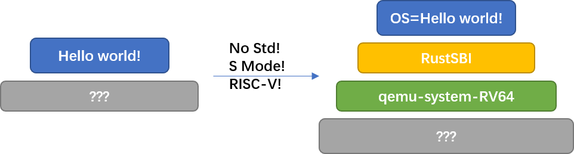

代码框架简述¶
本节导读¶
本节会介绍代码的整体框架。我们默认大家都熟练掌握了C语言。 整个项目目前的代码树如下：
.
├── bootloader
│ └── rustsbi-qemu.bin
├── LICENSE
├── Makefile
├── os
│ ├── console.c
│ ├── console.h
│ ├── defs.h
│ ├── entry.S
│ ├── kernel.ld
│ ├── log.h
│ ├── main.c
│ ├── printf.c
│ ├── printf.h
│ ├── riscv.h
│ ├── sbi.c
│ ├── sbi.h
│ └── types.h
├── README.md
OS是怎么跑起来的？¶
我们的OS的运行，是要依赖著名的模拟器软件-qemu的。比较形象的比喻是，我们的os就是一个内核软件，qemu就类似一个主板，它模拟了许多硬件，比如CPU，I/O串口等等。我们的OS会和qemu模拟出来的这些硬件打交道，而qemu则把得到的指令分配给实际存在的硬件完成。
我们的OS启动的时候，就像一个真正的操作系统启动一样。qemu使用我们提供的rustsbi的bin文件做为引导程序来启动OS。同时，我们的内核做为运行在qemu中的虚拟机，是无法直接和我们的外部host系统通信的，因此我们OS自己实现的printf函数，想要真正地输出到我们外部运行的shell上被我们看到，是要经过qemu的。实际上，在启动时sbi已经帮我们初始化好了，经过qemu模拟出来的串口，最终打印到我们外部的shell上的。之后，从我们的shell之中读取输入，也是同样的道理。sbi为我们内核提供的功能不止于输入输出，在sbi.c文件的可以看到其他支持的功能，比如关机。
注解
RustSBI 是什么？
SBI 是 RISC-V 的一种底层规范，RustSBI 是它的一种实现。 操作系统内核与 RustSBI 的关系有点像应用与操作系统内核的关系，后者向前者提供一定的服务。只是SBI提供的服务很少， 比如关机，显示字符串，读入字符串等。
qemu是怎么跑起来的？¶
第0章大家配置好了qemu之后可能就没再打开过了。qemu做为模拟器用途很多，操作也比较复杂。因此我们在makefile之中提供了具体运行qemu所需要的参数，大家无需更改。
QEMU = qemu-system-riscv64
QEMUOPTS = \
-nographic \
-smp $(CPUS) \
-machine virt \
-bios $(BOOTLOADER) \
-kernel kernel
run: $(BUILDDIR)/kernel
$(QEMU) $(QEMUOPTS)
这个就是最关键的地方:make run。我们查看这条指令的结构，它首先执行上面 kernel 所需要的链接以及编译操作得到一个二进制的kernel。之后执行按照QEMUOPTS变量指定的参数启动qemu。QEMUOPTS意义如下：
nographic: 无图形界面
smp 1: 单核 (默认值，可以省略)
machine virt: 模拟硬件 RISC-V VirtIO Board
bios $(bios): 使用制定 bios，这里指向的是我们提供的 rustsbi 的bin文件。
kernel： 使用 elf 格式的 kernel。这里就是我们需要写的OS内核了。
make run这个指令，应该会陪伴大家走过接下来所有的实验qaq。它完成了内核代码的编译生成kernel，并按照QEMUOPTS变量指定的参数加载我们的kernel，“加电”启动qemu。 此时，CPU 的其它通用寄存器清零，而 PC 会指向 0x1000 的位置，这里有固化在硬件中的一小段引导代码，它会很快跳转到 0x80000000 的 RustSBI 处。 RustSBI完成硬件初始化后，会跳转到 $(KERNEL_BIN) 所在内存位置 0x80200000 处， 执行我们操作系统的第一条指令。
那么，知道了这些步骤之后，关键就是怎么去写我们的OS了，这也是我们接下来各个实验的内容~。我们OS的代码，基本全部在os文件夹下。nfs文件夹下有一些文件系统相关的内容，在第七章之前大家无需关注这个文件夹下的内容。
os文件夹¶
os文件夹下存放了所有我们构建操作系统的源代码，是本次实验中最最重要的一部分，也是整个实验过程中同学们唯一需要修改的部分。在开始实验之前，大家一定要清楚我们这是自己设计的 OS，是无法使用C提供的官方标准库的，也就是说，就算是最简单的 printf 之类的函数都无法使用。还好，作为一个轻量级的 OS，我们也用不到那么多函数。
我们的os是一个由makefile来构建的C项目。下面介绍框架之中一些重要文件的作用，以及整个项目是如何链接及编译的。
- kernel.ld
kernel.ld是我们用于链接项目的脚本。链接脚本决定了 elf 程序的内存空间布局(严格的讲是虚存映射，注意程序中的各种绝对地址就在链接的时候确定)，由于刚进入 S 态的时候我们尚未激活虚存机制，我们必须把 os 置于物理内存的 0x80200000 处（这个地址的来由请参考 rustsbi）
BASE_ADDRESS = 0x80200000; SECTIONS { . = BASE_ADDRESS; skernel = .; stext = .; .text : { *(.text.entry) # 第一行代码 *(.text .text.*) } ... }SECTIONS 之中是从 BASE_ADDRESS 开始的各段。对程序内存布局还不太熟悉的同学可以翻看后面内存布局的章节。以 text 段为例，它是由不同文件的 text 组成。我们没有规定这些 text 段的具体顺序，但是我们规定了一个特殊的 text 段：.text.entry 段，该 text 段是 BASE_ADDRESS 后的第一个段，该段的第一行代码就在 0x80200000 处。这个特殊的段不是编译生成的，它在 entry.S 中人为设定。
- entry.S
# entry.S .section .text.entry .globl _entry _entry: la sp, boot_stack call main .section .bss.stack .globl boot_stack boot_stack: .space 4096 * 16 .globl boot_stack_top boot_stack_top:
.text.entry 段中只有一个函数 _entry，它干的事情也十分简单，设置好 os 运行的堆栈（la sp, boot_stack语句。bootloader 并没有好心的设置好这些），然后调用 main 函数。main 函数位于 main.c 中，从此开始我们就基本进入了 C 的世界。
- main.c
它是os的入口函数。在其中我们会完成一系列的初始化并开始运行os。 作为第一章，它在初始化完毕之后实际上起到了一个测试的作用。如果你的main.c能够完成一系列打印并且最后成功退出(Shutdown),那么祝贺你，你完成了os的第一步。
extern char s_text[]; extern char e_text[]; // ... void main() { clean_bss(); console_init(); printf("\n"); printf("hello wrold!\n"); errorf("stext: %p", s_text); // ... errorf("ebss : %p", e_bss); panic("ALL DONE"); }
其中，main.c 之中众多的 extern 声明的内存段是在 ld 文件之中定义的，通过这些 symbol 我们可以大致了解 OS 的内存布局。
此外
clean_bss()清空了bss段，注意，清空 elf 程序 .bss 段这一工作通常是由 OS 做的，而我们就只好自立更生了。你可能注意到除了 printf 之外，还有一些用于 log 的彩色输出宏。感兴趣的同学可以看看 log.h 。
- sbi.c
printf 的实现在 printf.c，在函数之中我们完成了对 format 字符串的解析工作。那么我们是如何把字符串真正地打印到 shell 上的呢？ 我们 调用consputc 函数输出一个 char 到 shell，而 consputc 函数其实就是调用了 sbi.c 之中的 console_putchar 函数。这个 console_putchar 函数的本质是调用了 sbi_call。剥开层层套娃，大家可以发现打印的最终实现是使用 sbi 帮助我们包装好的 ecall 汇编代码，通过指定 ecall 的 idx 为 SBI_CONSOLE_PUTCHAR, 并将我们的字符做为参数传入到 ecall 指定的寄存器之中完成一次系统调用来实现的。 本来，作为一个 OS，串口输出(也就是输出到 shell)的事情也应该我们自己来做，但这里为了简化这些硬件强相关的实现，我们利用 rust-sbi 的 M 态支持。这也是 riscv 灵活性的一个体现。
bootloader文件夹¶
这个文件夹是用来存放 bootloader(也就是 rustsbi) 的 bin 文件的，这一章以及之后都无需我们做任何修改。
硬件加电之后是处于M态，而 rustsbi 帮助我们完成了 M 态的初始化，最终将 PC 移动至我们 os 开始执行的位置。同时，它也会帮助S态的 os 完成一些基本管理，详情可以看 os/sbi.c 文件。